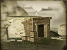

Requires
- Buildings: 
Enables
Basic Building Statistics (can be modified by difficulty level, arts, skills, traits and retainers)
- Cost: 3000
- +20 tonnes of high quality iron
- +2 per turn to town growth from trade within this province
- -10% to the costs of recruiting artillery in this province
- +180 to wealth generated by mines in this province
Description
The earth gives power in unexpected ways.
This province will produce very good quality iron, a vital resource for weapons. As the mine and its industries are developed and expanded, the ability to train modern units improves, and the cost of locally-recruited artillery units is reduced. Iron is, perhaps, the most important war-making commodity needed by any modern state. Without iron, there are no machines, and no modern weaponry made by those machines. Gold is very useful, but it flows to foreign hands when good iron is not available.